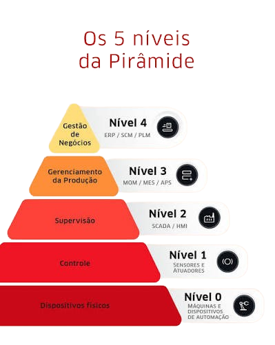
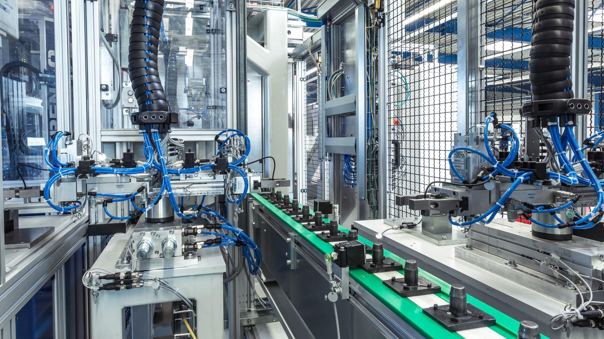
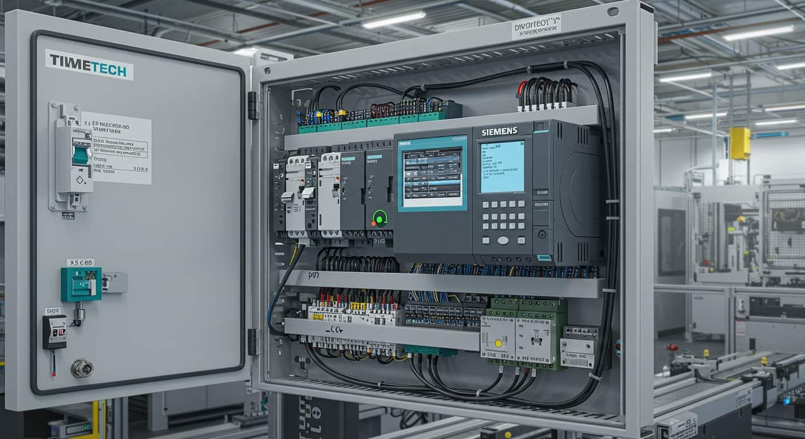
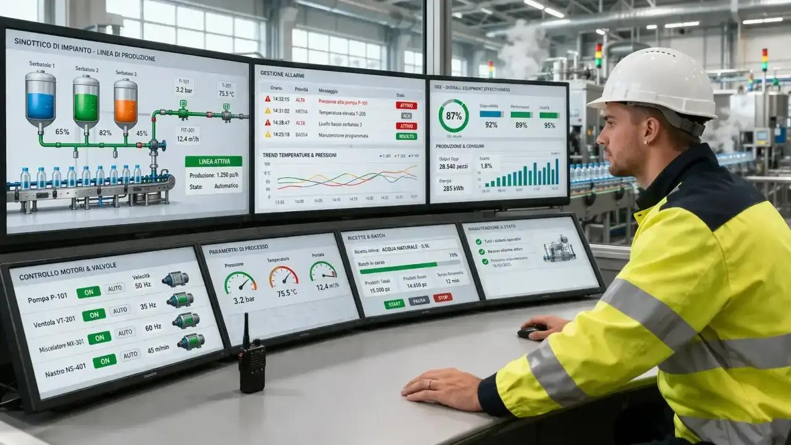

Ela possui cinco níveis principais: Nível Função Exemplos 0 Processo físico Motores, válvulas e máquinas. 1 Sensoriamento e atuação Sensores e atuadores. 2 Controle CLPs e controladores. 3 Supervisão e produção SCADA e sistemas de produção. 4 Gestão empresarial ERP e planejamento. As tecnologias de comunicação podem atuar esssSam diferentes níveis dessa pirâmide. Por exemplo: - IO-Link: comunicação com sensores e atuadores. - PROFINET: comunicação entre controladores e equipamentos. - Ethernet: integração de computadores e sistemas. - MQTT e OPC UA: integração de dados e sistemas industriais.

É a base da pirâmide. Nesse nível estão os processos físicos que acontecem dentro da indústria, como movimentação de peças, aquecimento, mistura de produtos e transporte de materiais. Exemplos: motores, esteiras transportadoras, bombas, válvulas e processos de fabricação. Exemplo prático: uma esteira transportadora movimenta caixas de um setor para outro da fábrica.

Nesse nível estão os equipamentos responsáveis por identificar o que acontece no processo e controlar o funcionamento das máquinas. Os sensores coletam informações, enquanto os controladores, como os CLPs, processam os sinais e enviam comandos aos atuadores. Exemplos: CLPs, sensores de temperatura, sensores de presença, módulos de entradas e saídas e controladores industriais. Exemplo prático: um sensor detecta uma caixa na esteira e envia um sinal ao CLP, que decide quando acionar ou parar o motor.

É responsável por acompanhar e supervisionar os processos industriais. Nesse nível, os operadores utilizam computadores e sistemas de supervisão para visualizar o funcionamento das máquinas, identificar alarmes e acompanhar informações da produção. Exemplos: SCADA, Elipse E3, sistemas HMI e servidores de supervisão. Exemplo prático: um operador acompanha a temperatura de uma máquina pelo computador e recebe um alerta quando o valor ultrapassa o limite permitido.

Esse nível organiza e acompanha as atividades produtivas da indústria.
Ele permite verificar a quantidade de produtos fabricados, o desempenho das máquinas, o cumprimento das metas e a utilização dos recursos.
Exemplos: sistemas MES, controle de qualidade, planejamento da produção e gerenciamento de manutenção.
Exemplo prático: um sistema informa que a fábrica produziu 800 peças durante o turno e compara esse resultado com a meta estabelecida.
É o nível mais alto da pirâmide. Nele são tomadas decisões relacionadas à administração e ao planejamento da empresa.
Os sistemas desse nível utilizam informações da produção para ajudar a controlar custos, estoques, compras, vendas e recursos financeiros.
Exemplos: sistemas ERP, SAP e plataformas de gestão empresarial.
Exemplo prático: o sistema identifica que o estoque de matéria-prima está baixo e auxilia o setor de compras a planejar novos pedidos.
Como os níveis trabalham juntos?
Imagine uma indústria que fabrica garrafas de água.
1. Nível 0: Produção
A esteira transporta as garrafas e a máquina realiza o enchimento.
2. Nível 1: Controle
Os sensores detectam as garrafas e o CLP controla o enchimento.
3. Nível 2: Supervisão
O operador acompanha o funcionamento da linha pelo sistema SCADA.
4. Nível 3: Gestão da produção
O sistema registra quantas garrafas foram produzidas e verifica as metas.
5. Nível 4: Gestão empresarial
A empresa analisa os custos, os estoques e as vendas para planejar a produção.